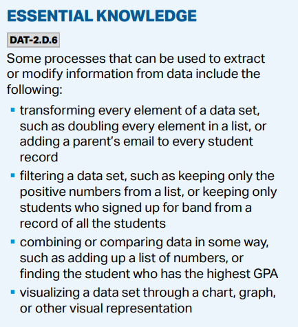

Big Idea 2: Data
Exam Weighting: 17-22%
2.1 Binary Numbers
- Data values can be stored in variables, lists, or standalone constants
- Computing devices represent data digitally, meaning the lowest-level components of any value are bits
- Bits: shorthand for binary digit and is either 0 or 1
- Abstraction: Process of reducing complexity by focusing on the main idea
- Bits are grouped to represent abstraction, such as numbers, characters, colors, or literally anything on your computer
- Analog data have values that change smoothly (continuous values) unlike digital data that have discrete values
- Using digital data to approximate analog data is an example of abstraction
- Sample technique: Measuring values of analog signal at regular intervals called samples
- Understand that in many programming languages, integers are represented by a fixed number of bits, meaning there is a limit and if you exceed the limit you will get an overflow error
- Number bases are used to represent data
- Binary (base 2), Decimal (base 10)
- Know how to convert Binary → Decimal, Decimal → Binary
Binary to Decimal Conversion
Each digit of a binary number is a power of 2, starting from 0 at the right:
1001011(binary) = 1 * 2^0 + 1 * 2^1 + 0 * 2^2 + 1 * 2^3 + 0 * 2^4 + 0 * 2^5 + 1 * 2^6
Algorithm in Python
def binary_to_decimal(binary_str):
decimal = 0 # Initialize the decimal result
length = len(binary_str)
# Iterate through each character in the binary string
for i in range(length):
bit = int(binary_str[length - i - 1]) # Get the bit (from right to left)
decimal += bit * (2 ** i) # Add the bit value multiplied by its power of 2
return decimal
Decimal to Binary
Divide the decimal number by 2 until the quotient becomes 0. Write the remainders in reverse order to make a binary number.
Example:
137 → 10001001
def decimal_to_binary(decimal):
if decimal == 0:
return "0"
binary = ""
while decimal > 0:
remainder = decimal % 2 # Get the remainder
binary = str(remainder) + binary # Add the remainder to the front of the binary string
decimal = decimal // 2 # Update the decimal by integer division
return binary
2.2 Data Compression
- Data compression reduces the number of bits (size) of stored data
- Fewer bits doesn’t necessarily mean less information
- Lossless compression: Reduce the number of bits without losing any original data
- Lossy compression: Significantly reduce the number of bits but provides an approximation of original data
- Minimize data → Lossy; Data is important, cannot be changed → Lossless
2.3 Extracting Information from Data
- Information: Collection of facts and patterns extracted from data
- More data → More opportunities for identifying trends, connections, addressing problems, finding correlations
- Metadata: Data about data
- Ex. Date of an image taken. Data size of an image. Location of the image. But the image is not part of metadata
- Helpful for finding, organizing, and managing information
- Challenges of processing data
- Depends on the capabilities of user and tools
- Careful of incomplete, invalid, or sourced data
- Large data sets are difficult to process for a single computer and may need parallel systems
- Scalability: Measure of a system’s ability to increase/decrease performance in response to changes in system processing demands
2.4 Using Programs with Data

- Tables, diagrams, text, and visual tools are used to communicate insight and knowledge from data
- Data filtering and search tools are important
- Examples of processes that may be on the exam:
- Combine, cluster, classify data to gain more knowledge
Important concepts in this unit include binary-to-decimal conversion, lossless and lossy compressions, metadata, abstraction, and scalability. The idea of abstraction becomes more important in Unit 3 or just programming in general so it’s better to get used to it. Metadata is also a common concept in the exam; I’ve seen so many questions like “Which of the following is metadata?” and the answer choice is “The image inside the file”, “The data file was created”, and “What song does the video have?”. Also, the CED doesn’t explicitly say you need to know hexadecimal or other base conversions, but it’s probably better to know them. You will definitely see them in the mock tests tho.
Example Problems
These are questions from the actual AP Exam.
When a cellular telephone user places a call, the carrier transmits the caller’s voice as well as the voice of the person who is called. The encoded voices are the data of the call. In addition to transmitting the data, the carrier also stores metadata. The metadata of the call include information such as the time the call is placed and the phone numbers of both participants. For which of the following goals would it be more useful to computationally analyze the metadata instead of the data?
- I. To determine if a caller frequently uses a specific word
- II. To estimate the number of phone calls that will be placed next Monday between 10:30 A.M. and noon.
- III. To generate a list of criminal suspects when given the telephone number of a known criminal
(A) I only (B) II only (C) II and III only (D) I, II, and III
I’ll (hopefully) add more during the winter break.